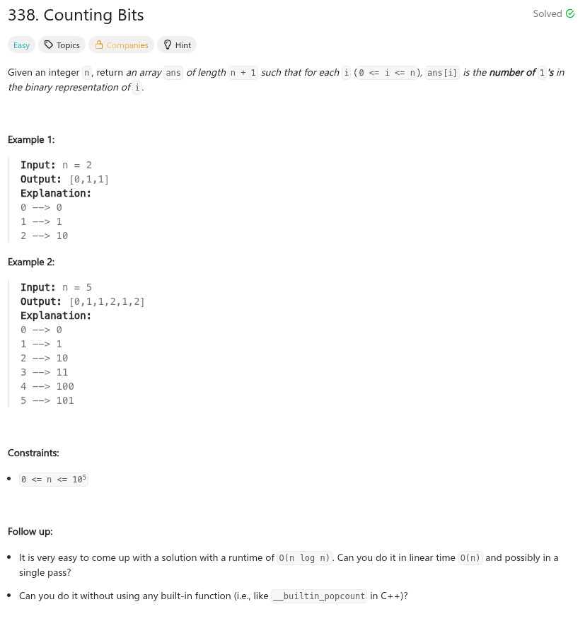

題目：

/**
* Note: The returned array must be malloced, assume caller calls free().
*/
int* countBits(int n, int* returnSize)
{
int c0 = 0;
int c1 = 0;
int *r = malloc(sizeof(int) * (n + 1));
*returnSize = n + 1;
memset(r, 0, sizeof(int) * (n + 1));
for (c0 = 0; c0 <= n; c0++) {
int val = c0;
for (c1 = 0; c1 < 64; c1++) {
r[c0] += (val & 1);
val >>= 1;
}
}
return r;
}